Greek yogurtsingle cup
9.2 / 10
Onyx reads your watch, your bloodwork, your training, and your food. Then it tells you the one thing to do today. And why.
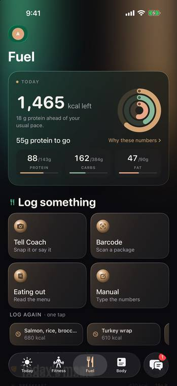
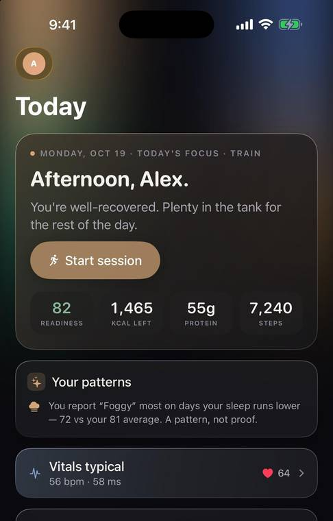
Most fitness apps give you more numbers to figure out. Onyx gives you an answer. One sentence. One button. And the reason behind both.
Readiness
While you slept, Onyx read your heart rate variability, resting heart rate, sleep, and breathing. It turned them into one simple score, measured against your own body. Not a stranger's average.
Green means push. Red means rest. The gym will still be there tomorrow.
Early warning
Some mornings your signals drift together. Resting heart rate up, HRV down, temperature a touch high. Onyx spots the pattern, shows you exactly what it is seeing, and eases your week until you are back at baseline.
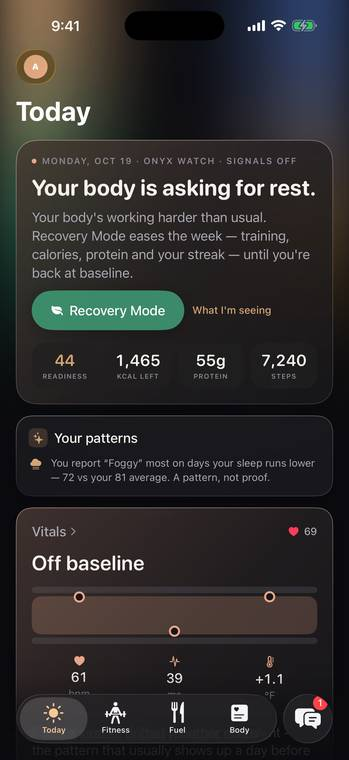
No black box. Every call comes with its reasons. A heads-up, never a diagnosis.
Coach
Coach knows your last workout, your last meal, and last night's sleep, because it's all connected. Ask a question and get an answer that's actually about you. Ask for a plan and Coach builds it. Nothing changes until you tap approve.
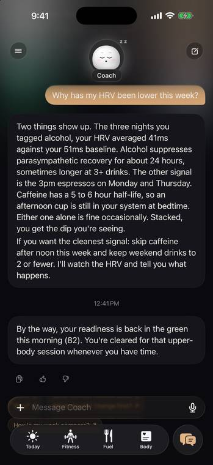
And yes, Coach has a face now. Make it yours. Change the mood, the colour, the outfit. It reacts to what you do.
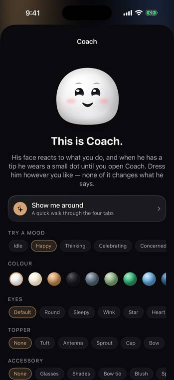
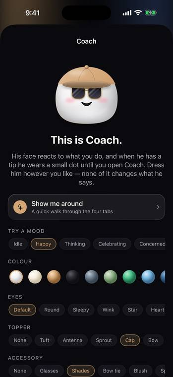
Bloodwork
Take a photo of your lab report, or import the PDF. Onyx reads every marker, charts it against its range, and keeps track across every draw. Your bloodwork finally becomes something you can use. Not something you file away.
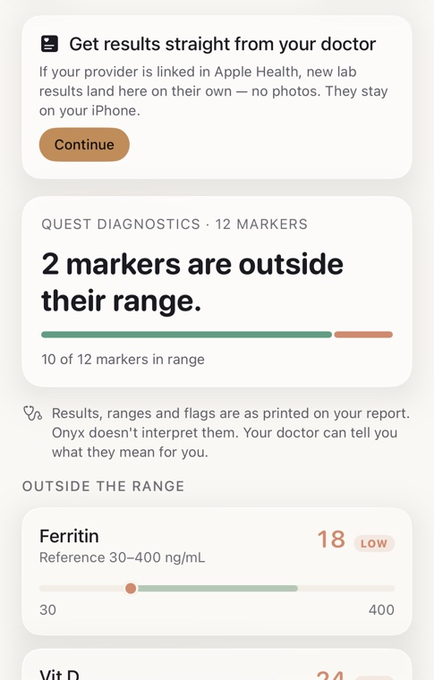
Fuel
Scan a barcode, snap a plate, or just say what you ate. Every food gets two scores. One for the product. And one for you, today, based on your bloodwork, your readiness, and your training.
A food can be fine in general and wrong for you today. Flip the switch and watch the verdicts change.
Illustrative examples. In the app, both scores come from the real product and your real data.
Training
Some mornings you're primed. Some mornings you barely slept. Onyx re-reads your recovery before it writes your workout, building across 4-to-8-week blocks that grow, peak, and ease off. Just like a good coach would plan them.
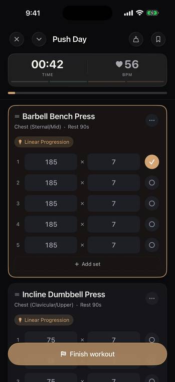
Logging is one tap. Your numbers are already there, filled in from last session. Between sets, a calm timer counts you back in.
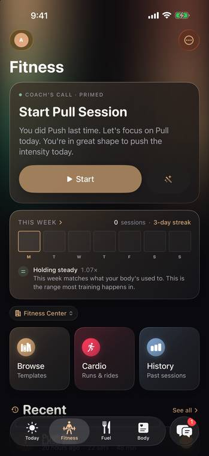
Runs, walks, and rides track live: pace, splits, heart-rate zones, your route drawing itself. And your Watch can run a whole session without your phone. Leave it in your bag.
Body
Eight simple domains. Vitals, sleep, fitness, nutrition, movement, and more, gathered into one calm view of how you're doing. Plus a biological age that shows, honestly, how your habits are adding up.
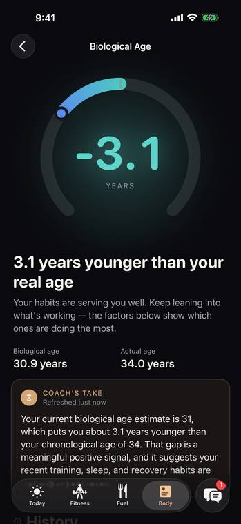
Your readiness lives where you already look. Lock Screen, Home Screen, and your Watch face. One glance, and you know what kind of day it's going to be.
Sleep
A score of 97 is nice. Knowing why is better. Onyx breaks down your night, deep, REM, core and awake, and Coach tells you what to repeat tonight.
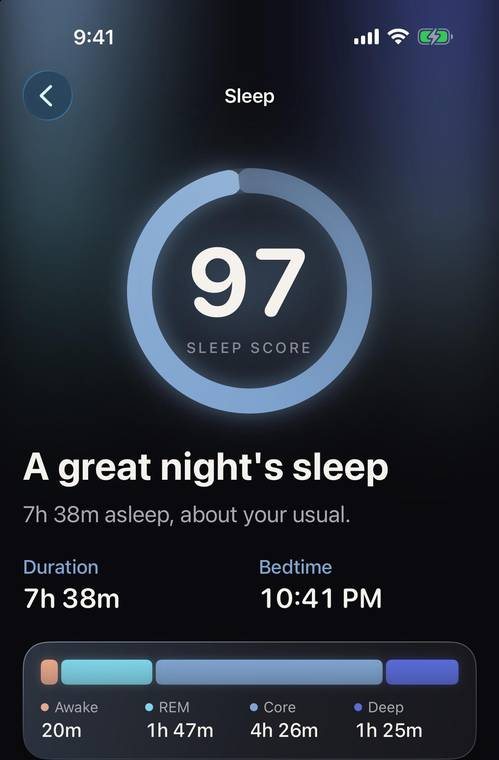
Your week
Every Monday, your week in review: sessions, volume, sleep, and how it compares to last week. And every session is built the night before, so tomorrow is never a question.
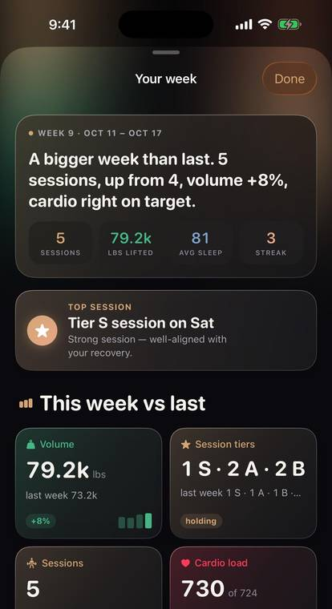
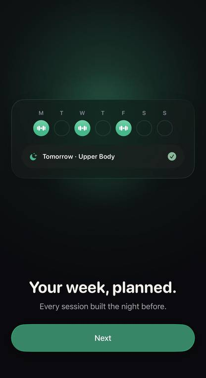
For real life
Maybe you're on a GLP-1, and your appetite isn't what it was. Maybe you're coming back from a hard month, or a hard year. Onyx doesn't hold you to a plan written for who you were. It reads who you are this week: protein that protects your muscle, training that bends instead of breaking, labs that show what's really changing. No guilt. Just guidance.
Privacy
Your scores, trends and plans are worked out on your device. Your body is not a cloud dashboard.
Coach asks before anything is sent to its AI, and then sends only what's needed, never your name. Your health data stays out of iCloud.
Your health data is never sold, never used for ads, and never used to train AI. That's the whole idea, in one line.
Pricing
Everything your iPhone works out on its own is free. Pro is simply the part that thinks with you.
Subscriptions renew automatically unless cancelled at least 24 hours before the end of the period, and are managed in your Apple ID settings.
Questions
An iPhone running iOS 26. An Apple Watch brings the full picture: overnight HRV, resting heart rate, sleep, and wrist temperature feed your readiness score and the early warning. And it can run your workouts all on its own. Onyx has a proper iPad layout, too.
A lot: readiness and the illness early-warning in full, session grades, cardio load, biological age, sleep need and debt, the adaptive program, Recovery Mode, both food scores, and your first lab report. Pro ($29.99 a year, free week where available) adds Coach unlimited, unlimited photo and description meal logging, the meal planner, menu reading, and unlimited lab reports.
Photograph a report or import the PDF. Onyx charts every marker against its range, tracks it across draws, explains it in plain language, and turns anything flagged into a gentle suggestion, always as a card you approve. It's a heads-up, not a diagnosis.
Your scores, trends and plans are computed on your iPhone, and your health data isn't stored in iCloud. When Coach or a photo needs a larger AI model, Onyx asks first, then sends only what's needed, without your name. Your health data is never sold, never used for ads, and never used to train AI. The privacy policy has every detail.
Very much so. Your appetite, recovery, and labs are all changing at once, and Onyx reads all three: protein targets that protect your muscle, training that adapts day by day, and bloodwork tracked over time so you can see what's really happening.
No. Onyx is not a medical device and does not diagnose. It offers a heads-up and a plan for the day. Please talk to your doctor about your results.
Download it free tonight. Wake up tomorrow to one clear answer, and find out what your body has been trying to tell you.